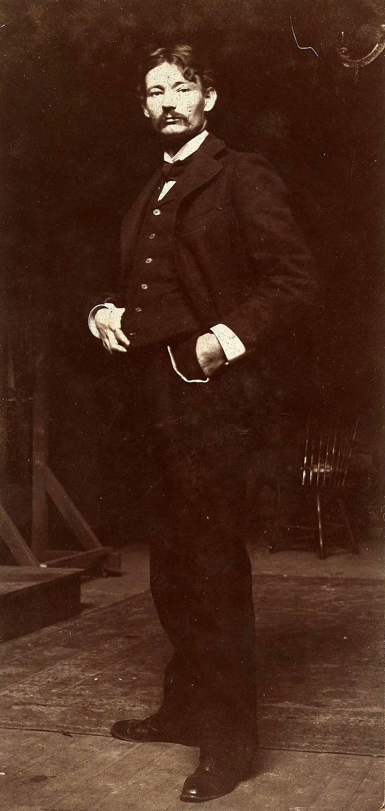
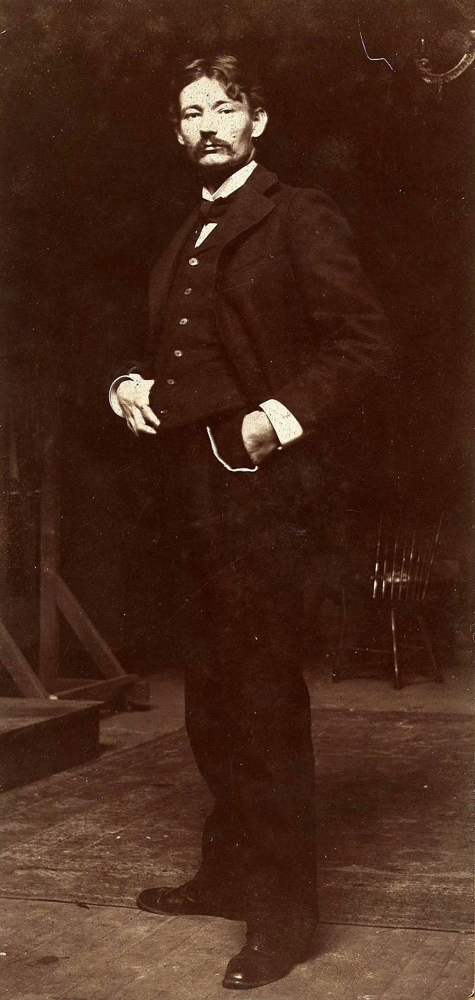
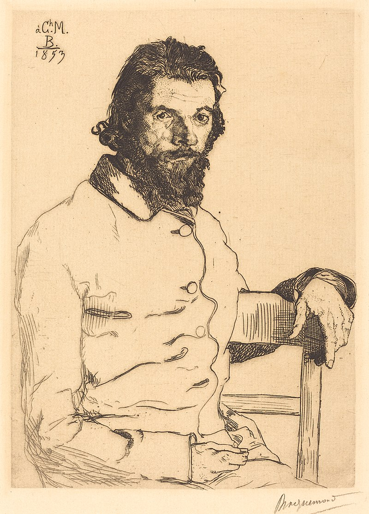
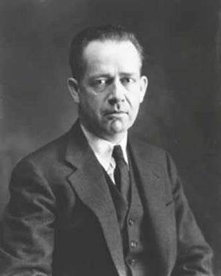
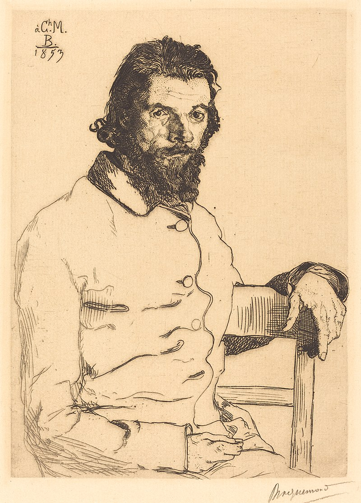
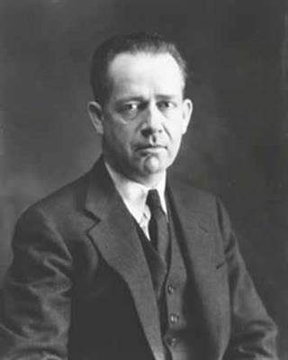

EDVARD HOPER
Edvard Hoper je američki slikar realizma. Iako je široko poznat po svojim slikama slikanim uljanim bojama, bio je jednako vešt kao akriličar i bakrorezac. Njegova karijera je imala odlučujuću korist od braka sa umetnicom Žozefin Nivison, koja je mnogo doprinela njegovom radu, ujedno kao model i kao kreativni partner. Hoper je bio sporedni umetnik, stvarajući prigušenu dramu od uobičajenih tema koje imaju mnogo slojeva poetskog značenja, pozivajući narativne interpretacije, često nenamerno. Pohvaljen je zbog 'potpuno istinite' Amerike koju je tumačio.
Uticaj
Hoperov uticaj na svet umetnosti i pop kulturu je neporecnljiv. Iako nije imao formalne studente, mnogi umetnici su ga naveli kao uticaj, uključujući Vilema de Kuninga, Džima Dajna i Marka Rotka. Ilustracija Hoperovog uticaja je Rotkovo rano delo "Kompozicija I" (oko 1931), koje je direktna parafraza Hoperove slike "Chop Suey". Hoperove filmske kompozicije i dramatična upotreba svetla i tame učinili su ga omiljenim među filmskim režiserima. Film "Pennies from Heaven" iz 1981. uključuje prizor "Nighthawks", sa glavnim glumcima u restoranima. Poznati reditelj nadrealističkih horor filmova Dario Argento otišao je toliko daleko da je rekreirao restoran i goste u Nighthawks-u kao deo seta za svoj film "Deep Red" iz 1976. godine. Ridli Skot je citirao istu sliku kao vizuelnu inspiraciju za "Blade Runner". Da bi uspostavio osvetljenje scena u filmu "Put u propast" iz 2002. godine, reditelj Sem Mendes je crpio iz Hoperovih slika kao izvora inspiracije, posebno iz slike "Njujorški film". Muzički uticaji su takođe mnogobrojni. Godine 1993, Madona je bila toliko inspirisana Hoperovom slikom "Girlie Show" iz 1941. da je po njoj nazvala svoju svetsku turneju i uključila mnoge pozorišne elemente i atmosferu slike u predstavu. Godine 2004. britanski gitarista Džon Skvajer (iz grupe The Stone Roses) objavio je konceptualni album zasnovan na Hoperovom delu pod nazivom "Marshall's House". Svaka pesma na albumu je inspirisana Hoperovom slikom i deli njen naslov. U poeziji, brojne pesme su inspirisane Hoperovim slikama, obično kao živopisni opisi i dramatizacije; ovaj žanr je poznat kao ekfraza. Pored brojnih pojedinačnih pesama inspirisanih Hoperom, nekoliko pesnika je napisalo zbirke zasnovane na Hoperovim slikama.
Citati:
- "Verujem da su veliki slikari sa svojim intelektom majstora pokušali da nateraju ovaj nevoljni medij boje i platna u zapis svojih emocija."
- "U radu nikad ne mislim da je uzmenirujuće upadanje elemanata deo moje vizije i neizbežno je brisanje i zamena ove vizije samim radom dok se odvija."
- "Na kraju krajeva, mi nismo Francuzi i to nikada ne možemo biti, a svaki pokušaj da to budemo je da negiramo svoje nasleđe i da pokušamo da sebi nametnemo karakter koji ne može biti ništa drugo do furnir na površini."
- "Dobra umetnost je spoljašnji izraz unutrašnjeg života umetnika, a taj unutrašnji život će rezultirati njegovom ličnom vizijom sveta."
- "Postoji neka vrsta ushićenja zbog sunčeve svetlosti na gornjem delu kuće."
- "Mislim da će postojati pokušaj da se ponovo shvate iznenađenja i slučajnosti prirode i intimnjije i saosećajnije proučavanje njenih raspoloženja, zajedno sa obnovljenim čudom i poniznošću onih koji su još uvek sposobni za ove osnovne reakcije."
- "Jedini pravi uticaj koji sam imao sam ja."
- "Ako su tehničke inovacije impresionista dovele samo do tačnijeg predstavljanja prirode, to možda nije imalo veliku vrednost u povećanju njihove moći izražavanja."
- "Više mene izlazi kada improvizujem."
- "Nijedna količina vešte kreacije ne može zameniti suštinski element mašte."
Uzori i učitelji:
 

 



Izložbe:
- 1980.
- "Edvard Hoper: Umetnost i Umetnik" se otvorio u Vitni muzeju američke umetnosti je posetio London, Dizeldorf, Amsterdam, San Francisko i Čikago. Prvi put ikada, ova izložba je predstavila Hoperove slike naslikane uljanim bojama zajedno sa pripremnim studijama ovih dela. Ovo je bio početak Hoperove popularnosti u Evropi i velike reputacije širom sveta.
- 2004.
- Velika selekcija Hoperovih slika je obišla Evropu, posećujući muzej Ludvig u Kelnu u Nemačkoj i Tejt Modern u Londonu. Tejt izložba je postala druga najpopularnija i istoriji galerije, sa 420,000 posetilaca u tri meseca koliko je bila otvorena.
- 2007.
- Ova izložba je bila fokusirana na period Hoperovih najvećih dostignuća - od 1925 do sredine veka - i predstavljena je u Muzeju lepih umetnosti u Bostonu. Izložba je sadržala 50 slika naslikanih uljanih bojama, 30 slika naslikanih vodenim bojama i 12 otisaka.
- 2010.
- Muzej Fondacija Ermitaž u Lozani u Švajcarskoj je držao izložbu koja je pokrila Hoperovu čitavu karijeru. Uključila je slike slikane uljanim i vodenim bojama, bakropise, stripove, postere, kao i pripremne studije za odabrane slike. Izložba je prethodno viđena u Milanu i Rimu.
- 2011.
- Vitni muzej američke umetnosti je održao izložbu pod imenom "Edvard Hoper i njegova vremena".
- 2012.
- U 2012. izložba se otvorila u Velikoj palati u Parizu koja je nastojala da rasvetli kompleksnost njegovih remek-dela, što je pokazatelj bogatstva Hoperovog opusa. Bila je hronološki podeljena na dva dela: prvi je obuhvatao Hoperove formativne godine (1900-1924), upoređujući njegov rad sa radovima njegovih savremenika i umetnosti koju je video u Parizu, koja je možda imala uticaj na njega. Drugi deo se bavio umetnosti njegovih zrelih godina, od prvih amblematičnih slika njegovog ličnog stila, do njegovih poslednjih radova.
- 2020.
- Fondacija Bejler je održala izložbu prikazujući Hoperove slike. Izložba se usredsredila na Hoperovu "ikoničnu reprezentaciju beskonačnog prostranstva američkih prirodnih i gradskih pejzaža". Ovaj aspekt se retko pominje na izložbama, ali je ključni sastojak za razumevanje Hoperovog rada.